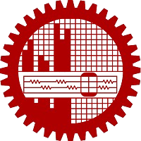

<div class="container-fluid">
    <div class="row">
        <div class="col-sm-12 col-lg-4">
            <div class="col-sm-12 col-lg-12 avatar">
                
            </div>

            <div class="col-sm-12 col-lg-12 title">
                <h1>Dr. Mohammad Mahmudul Alam</h1>
            </div>

            <div class="col-sm-12 col-lg-12 social">
                <a href="mailto:mdmahmudulalam007@gmail.com">
                    <fa-icon [icon]="envelop"></fa-icon>
                </a>
                <a href="https://github.com/MahmudulAlam" target="_blank">
                    <fa-icon [icon]="github"></fa-icon>
                </a>
                <a href="https://www.linkedin.com/in/mahmudul-alam/" target="_blank">
                    <fa-icon [icon]="linkedin"></fa-icon>
                </a>
                <a href="https://scholar.google.com/citations?view_op=list_works&hl=en&user=9z9HFSEAAAAJ" target="_blank">
                    <fa-icon [icon]="scholar"></fa-icon>
                </a>
            </div>
        </div>

        <div class="col-sm-12 col-lg-8">
            <h1 class="header">Biography</h1>
            <p class="biography">
                Mohammad Mahmudul Alam, Ph.D. is a deep learning specialist with over six years of hands-on
                experience, including internships at Amazon Web Services (AWS) and Analog Devices Inc. (ADI). He has
                a strong track record of publications in prestigious conferences such as NeurIPS, ICML, AISTATS,
                AAAI, KDD, and CVPR. Dr. Alam earned his Ph.D. in Computer Science from the University of Maryland,
                Baltimore County (UMBC), where he was advised by <a
                    href="https://www.csee.umbc.edu/people/faculty/tim-oates/" class="hyperlink" target="_blank">Dr. Tim Oates</a>
                and <a href="https://www.edwardraff.com/index.php" class="hyperlink" target="_blank">Dr. Edward Raff</a>. His current research focuses
                on zero-shot methods for generative AI.
            </p>
            
            <div class="row">
                <div class="col-sm-12 col-lg-4">
                    <h1 class="header">Interests</h1>
                    <ul class="interest">
                        <li><fa-icon [icon]="check"></fa-icon>&nbsp;&nbsp;Deep Learning</li>
                        <li><fa-icon [icon]="check"></fa-icon>&nbsp;&nbsp;Generative AI</li>
                        <li><fa-icon [icon]="check"></fa-icon>&nbsp;&nbsp;Sequence Modeling</li>
                        <li><fa-icon [icon]="check"></fa-icon>&nbsp;&nbsp;Natural Language Processing</li>
                    </ul>
                </div>
                
                <div class="col-sm-12 col-lg-8">
                    <h1 class="header">Experiences</h1>
                    <div class="container experience">
                        <div>
                            <a href="https://aws.amazon.com" target="_blank">
                                
                            </a>
                        </div>
                        <div>
                            Applied Scientist Intern 2023<br>
                            Amazon Web Services (AWS)<br>
                            Santa Clara, CA, United States 
                        </div>
                    </div>
                    <div class="container experience">
                        <div>
                            <a href="https://www.analog.com/en/index.html" target="_blank">
                                
                            </a>
                        </div>
                        <div>
                            Machine Learning Algorithms Intern 2024<br>
                            Analog Devices Inc. (ADI)<br>
                            Boston, MA, United States
                        </div>
                    </div>
                </div>
            </div>

            <div class="col-sm-12 col-lg-12">
                <h1 class="header">Education</h1>
                <div class="container experience">
                    <div>
                        <a href="https://www.umbc.edu" target="_blank">
                            
                        </a>
                    </div>
                    <div>
                        Ph.D. + M.Sc. in Computer Science 2024<br>
                        University of Maryland, Baltimore County (UMBC)<br>
                        Baltimore, MD, United States 
                    </div>
                </div>
                <div class="container experience">
                    <div>
                        <a href="https://www.buet.ac.bd" target="_blank">
                            
                        </a>
                    </div>
                    <div>
                        B.Sc. in Electrical and Electronic Engineering 2019<br>
                        Bangladesh University of Engineering and Technology (BUET)<br>
                        Dhaka, Bangladesh
                    </div>
                </div>
            </div>
        </div>
    </div>
</div>
